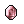

Gemas falsificadas

Sistema · todas as classes que gastam gema
As habilidades que gastam Gema Azul, Amarela ou Vermelha agora aceitam uma gema falsificada, que custa só 20% da verdadeira. A habilidade sai mais fraca com ela. A falsificada serve para o dia a dia; a verdadeira fica para a guerra e para o que não pode falhar.
Como era → como ficou
| Como era | Como ficou | |
|---|---|---|
| Gemas | só as verdadeiras, a 600 z cada | as verdadeiras ou as falsificadas, a 120 z cada |
| Efeito | cheio | cheio com a verdadeira; mais fraco com a falsificada (tabela abaixo) |
| Qual gasta | — | a falsificada primeiro, a não ser que você fixe a verdadeira |
Onde comprar
Os dois Contrabandistas vendem as três falsificadas (Azul, Amarela e Vermelha) a 120 z cada:
- o Contrabandista do Distrito dos Mercadores (o mesmo dos frascos falsificados do Alquimista);
- o Contrabandista de Gemas, na sala dos Magos do Distrito.
A falsificada pesa 1, pode ser negociada e não cai de monstro.
Qual gema a habilidade gasta
- Com as duas no inventário, a habilidade gasta a falsificada primeiro.
- Fixar a verdadeira: dê dois cliques na gema verdadeira (Azul, Amarela ou Vermelha). Aparece a mensagem "Gema verdadeira fixada", e as habilidades passam a gastar a verdadeira daquela cor. Dois cliques de novo soltam, e a falsificada volta a sair primeiro. O clique não gasta a gema.
- Habilidades de duas ou mais gemas (Proteger Terreno, Abracadabra, Ganbantein): a versão mais fraca só sai com todas as gemas falsificadas. Se falta uma falsificada, a habilidade gasta as verdadeiras e sai cheia. Elas não se misturam.
- O Espírito do Bruxo e a carta Mistress continuam como antes. A falsificada não vale como verdadeira com eles.
O que muda em cada habilidade
No nível máximo, com a verdadeira → com a falsificada:
| Habilidade | Classe | Gema | Com a verdadeira | Com a falsificada |
|---|---|---|---|---|
| Escudo Mágico | Mago, Sacerdote | 1 Azul | 11 golpes, 50 s | 6 golpes, 50 s |
| Petrificar | Mago | 1 Vermelha | chance normal | metade da chance |
| Portal | Noviço, Sacerdote | 1 Azul | 20 s, 10 pessoas | 3 s, 4 pessoas |
| Ressurreição | Sacerdote | 1 Azul | volta com 80% do HP | volta com 5% do HP |
| Santuário | Sacerdote | 1 Azul | 30,9 s | 15,4 s (metade da cura) |
| Magnus Exorcismus | Sacerdote | 1 Azul | dano cheio | metade do dano (dura o mesmo) |
| Coluna de Fogo (nv 6–10) | Bruxo | 1 Azul | o nível usado | sai como nv 5 |
| Névoa Venenosa | Mercenário | 1 Vermelha | 50 s | 25 s |
| Explosão Tóxica | Mercenário | 1 Vermelha | dano cheio | metade do dano |
| Grafite | Arruaceiro | 1 Vermelha | 180 s | 90 s |
| Vulcão, Dilúvio, Furacão | Sábio | 1 Amarela | 300 s, bônus cheio | 150 s e metade do bônus |
| Proteger Terreno | Sábio | 1 Azul + 1 Amarela | 345 s | 170 s (a mesma área) |
| Desencantar | Sábio | 1 Amarela | chance normal | metade da chance |
| Abracadabra | Sábio | 2 Amarelas | qualquer habilidade da lista | sem os efeitos especiais (Mudar Classe, Invocar Monstro, Domar, Morte, Coma, Recuperação Total, Gravidade…) |
| Ganbantein | Bruxo (quest) | 1 Amarela + 1 Azul | 80% de tirar o chão | 60% |
Dicas
- No up, a falsificada faz quase tudo por um quinto do preço: Escudo Mágico, Santuário, Magnus e os campos do Sábio.
- Na guerra, fixe a verdadeira: o Proteger Terreno e o Desencantar falsificados duram e acertam menos.
- O Portal falsificado leva até 4 pessoas e fecha em 3 s: dá para ir sozinho ou em dupla. Para o grupo todo, use a verdadeira.
- A Ressurreição falsificada levanta o aliado com pouco HP: cure logo em seguida.
Veja também: Maestria Elemental do Bruxo, Mercador e Alquimista — lote 2